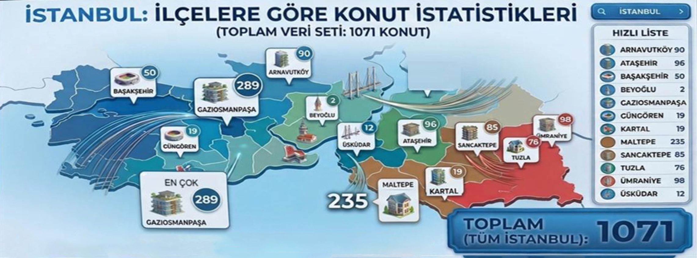
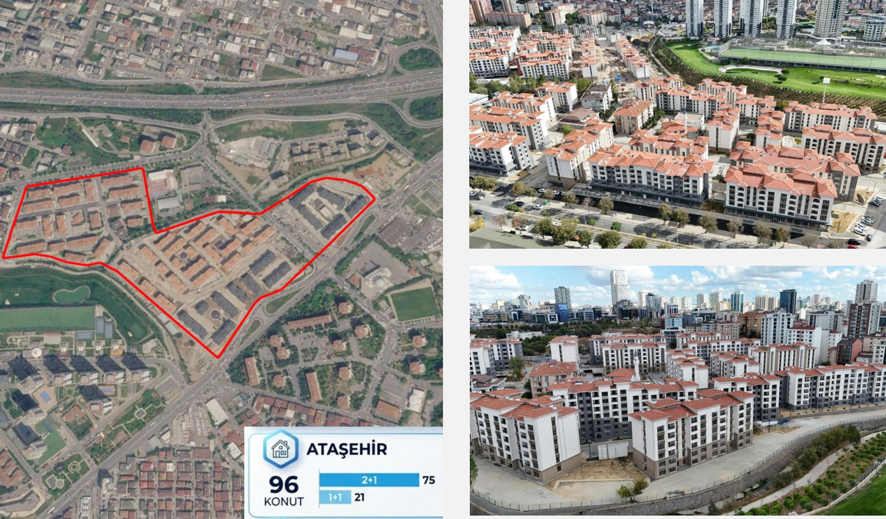
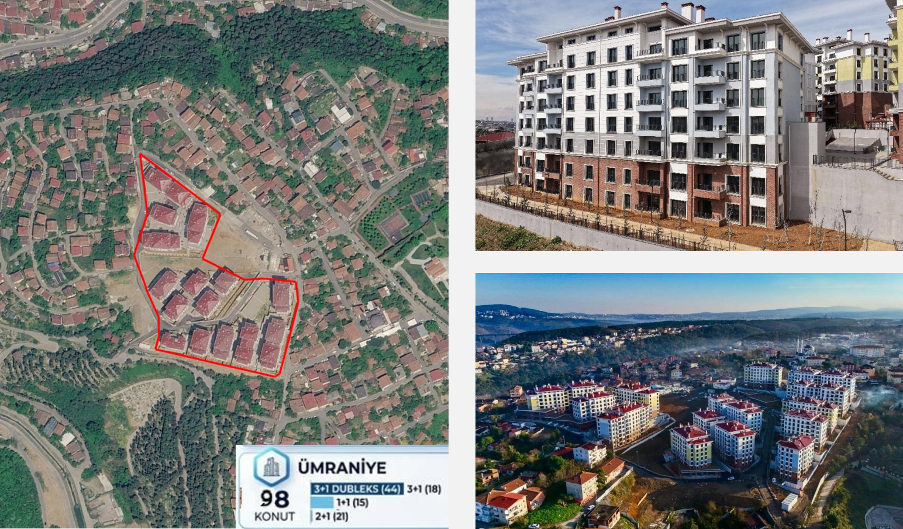
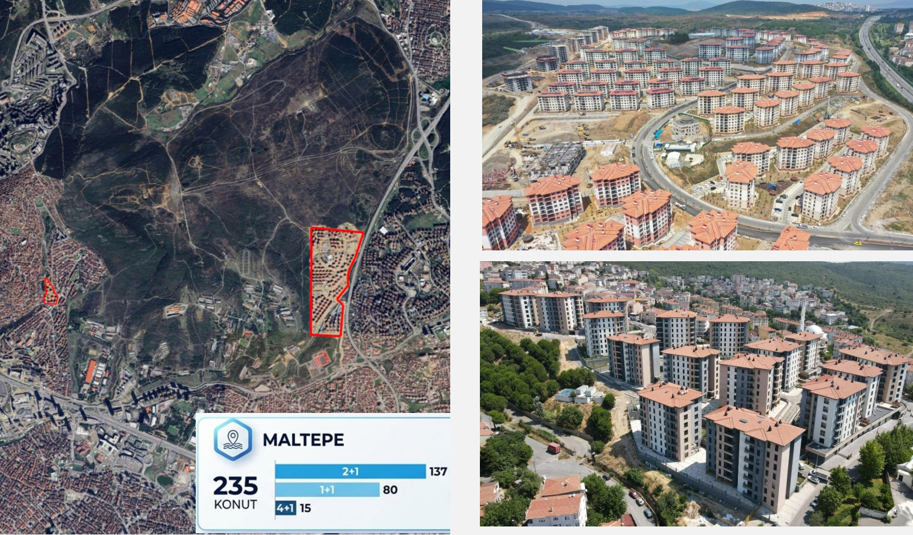
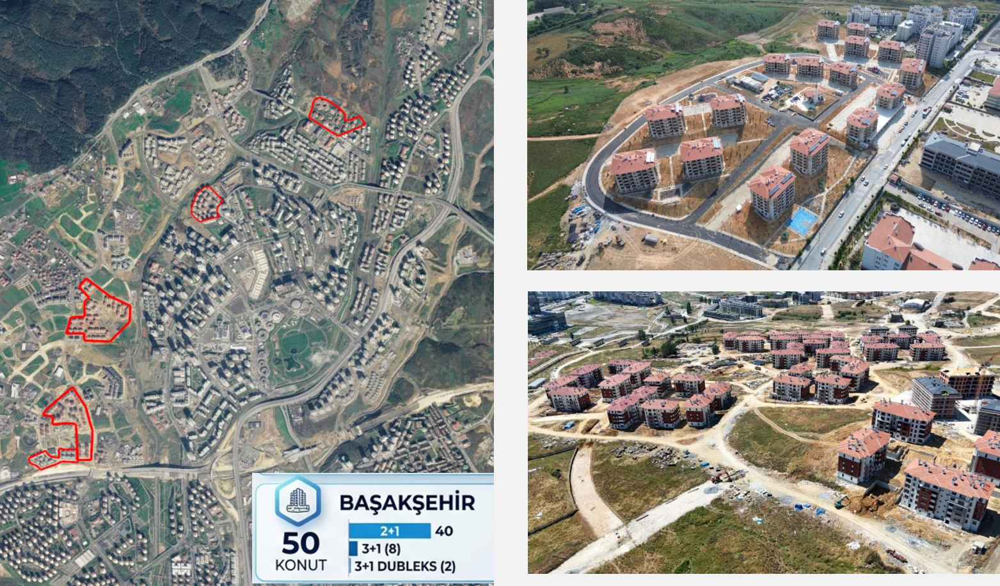
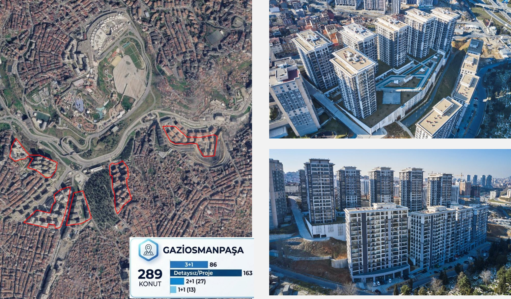
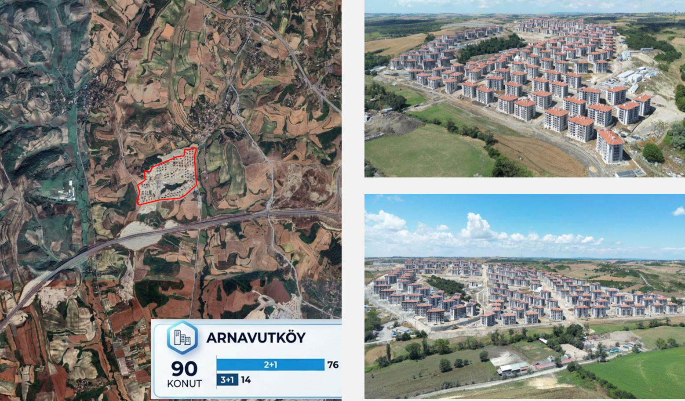
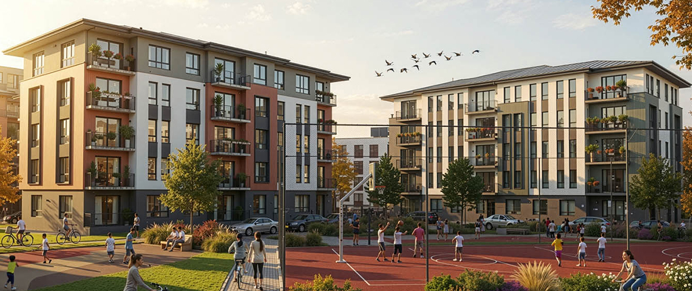

Dar gelirli ailelere destek ve sosyal devlet anlayışıyla hayata geçirilen Sosyal Konut Tahsis Projesi, İstanbul genelinde yeni bir yaşam alanı sunuyor.
Tahsis Edilecek Konut
İstanbul ili genelinde 4 grupta e-Devlet üzerinden kura ile tahsis edilecektir.
Başvuru Tarihi
14 - 25 Eylül 2026
Kura Çekilişi
Ekim 2026
İstanbul’da Tahsis Konutlarının İlçe Bazında Dağılımı


Yukarı Dudullu Mah. Şerifali Bölgesi

Hekimbaşı Mahallesi

Atışokulu ve Gülsuyu (İETT Blokları) Bölgeleri

Kayabaşı Bölgesi

Sarıgöl

Baklalı Mahallesi
Sosyal Konut Tahsis Projesinde belirlenen aylık tahsis bedelleri.
Fiyatlara KDV dahildir.
| Bölge (Grup) | 1+1 (TL/Ay) | 2+1 (TL/Ay) | 3+1 (TL/Ay) | 4+1 (TL/Ay) |
|---|---|---|---|---|
| 1. Grup (Ataşehir, Sancaktepe, Ümraniye, Üsküdar) | 10.000 | 12.000 - 17.000 | 15.000 - 18.000 | - |
| 2. Grup (Maltepe, Tuzla, Kartal) | 10.000 | 12.000 - 17.000 | 15.000 - 18.000 | 18.000 - 20.000 |
| 3. Grup (Başakşehir, G.Osmanpaşa, Beyoğlu, Güngören) | 10.000 | 12.000 - 17.000 | 15.000 - 18.000 | - |
| 4. Grup (Arnavutköy) | - | 12.000 - 17.000 | 15.000 - 18.000 | - |
Konutun tesliminden itibaren ilk 12 ay tahsis bedeline artış uygulanmaz. İlk artış, 12 ayın sonrasındaki ilk Ocak ayında TÜFE esasına göre yapılır.
Tahsis Sözleşmesi imzalanmadan önce, bir aylık tahsis bedeli tutarında teminat alınır. Tahsis süresi sonunda, hak sahibinin İdareye karşı herhangi bir borcu veya konutta oluşmuş bir zararı bulunmaması halinde teminat, güncel tahsis bedeli üzerinden iade edilir.
Genç kategorisi hak sahiplerinin tahsis süresi içinde çocuk sahibi olması halinde tahsis süresi sonuna kadar bedel artışı uygulanmaz.
Konut yalnızca hak sahibi ve birinci derece yakınları tarafından ikamet amacıyla kullanılabilir; konut boş bırakılamaz.
Teslim tarihinden itibaren azami tahsis süresi 3 yıldır.
Becayiş hakkı bulunmamaktadır. Konut üçüncü kişilere kiralanamaz ve kullanım hakkı devredilemez ve ofis, ticarethane veya herhangi bir ticari faaliyet amacıyla kullanılamaz.
Tahsis süresi boyunca, tahsis sahibi veya eşi adına bağımsız konut niteliğinde taşınmaz edinilmesi halinde tahsis hakkı sona erer ve konutun tahliyesi süreci başlatılır.
Tahsis süresi boyunca, hak sahiplerinin tahsis şartlarını taşımaya devam edip etmediği (Konut edinme, medeni hal, genel hükümlere uyum ve fiili ikamet) yıllık olarak kontrol edilir.
Aşağıdaki hallerden herhangi birinin tespiti durumunda tahsis sona erdirilir ve tahliye işlemi başlatılır:
Başvuru veya denetim süreçlerinde gerçeğe aykırı beyanda bulunulduğunun tespit edilmesi halinde,sözleşme imzalanmaz.
Tahsis süresi boyunca yapılan yıllık kontroller sonucunda, tahsis sahibi veya eşinin tahsis şartlarından herhangi birini kaybettiğinin veya sözleşme hükümlerine aykırı davrandığının tespit edilmesi halinde, tahsis hakkı sona erer ve konutun tahliyesi süreci başlatılır. Örn. Kullanım hakkının amacı dışında kullanılması, konut mülkiyet durumunun değişmesi, maddi yükümlülüklerin yerine getirilmemesi, medeni durum değişikliği vb
Bir takvim yılı içinde tahsis bedelinin ödenmesinde iki kez temerrüde düşülmesi veya aidat/ortak giderlerin iki kez vadesinde ödenmemesi ve ihtara rağmen ödenmemesi.
Konutun tesliminden itibaren 3 yıllık sürenin dolması halinde konut tahliye edilecek olup, ek tahsis süresi verilmeyecektir.
Çevre, Şehircilik ve İklim Değişikliği Bakanı Murat Kurum’un paylaştığı bilgilere göre sıkça sorulan sorular ve cevapları.
Bakan Kurum’un paylaştığı bilgilere göre proje için ilçeler 4 grupta toplandı. Başakşehir, Gaziosmanpaşa, Beyoğlu ve Güngören ilçelerinde toplam 360, Maltepe, Tuzla ve Kartal ilçelerinde toplam 330, Ataşehir, Sancaktepe, Ümraniye ve Üsküdar ilçelerinde toplam 291, Arnavutköy ilçesinde 90 olmak üzere toplam 1071 konut kiralanacak. İstanbul il sınırları içerisinde ikamet edenler istediği ilçe için başvuru yapabilecek. Yine 4 grupta vatandaşlara kontenjanlar tanındı. Genç Evli Ailelere, 1+1 veya 2+1 konut, İki veya Daha Fazla Çocuklu Ailelere 2+1, 3+1 veya 4+1 konut tahsis edilecek.
Başvurular e-Devlet üzerinden, Toplu Konut İdaresi Başkanlığı hizmetleri arasında yer alan "Konut / İşyeri Başvuru" hizmeti menüsünden gerçekleştirilecek. Başvuru ücreti alınmayacak.
Sosyal Konut Tahsisi Projesi kapsamında, Ekim 2026’da ilk etapta 1071 adet konutun teslimi yapılacak olup toplamda 15 bin konut kiralanacak.
Konutlar 4 grupta tahsis edildi. Başakşehir, Gaziosmanpaşa, Beyoğlu ve Güngören ilçelerinde toplam 360, Maltepe, Tuzla ve Kartal ilçelerinde toplam 330, Ataşehir, Sancaktepe, Ümraniye ve Üsküdar ilçelerinde toplam 291 ve Arnavutköy ilçesinde 90 olmak üzere toplam 1071 konut kiralanacak.
Genç Evli Ailelere, 1+1 veya 2+1 konut, İki veya Daha Fazla Çocuklu Ailelere 2+1, 3+1 veya 4+1 konut tahsis edilecek.
Projeye sadece İstanbul ilinde ikamet eden vatandaşlarımız başvuru yapabilecek.
İstanbul il sınırları içerisinde ikamet edenler istediği ilçe için başvuru yapabilecek.
Üzerinde konut tapusu olanlar başvuru yapamayacak.
Son 5 yıl içerisinde bağımsız konut niteliğindeki bir taşınmazı satın alan veya satanlar başvuru yapamayacak.
Evet, tahsis süresi içerisinde konut alınması durumunda konutun tahliye edilmesi gerekmektedir.
Proje kapsamında 1+1, 2+1, 3+1 ve 4+1 konut tipleri bulunmaktadır.
Konut teslimi için İdarece bildirilen tarihten itibaren 12 ay süreyle artırılmayacak. 12 aylık sürenin sona ermesini takip eden ilk ocak ayında, TÜFE oranında artış yapılacak.
Tahsis bedeli, konut teslimini takip eden ayın 20’sinde ödenmeye başlanacak.
Hayır, başvuru yapamazlar.
Başvurular, e-Devlet üzerinden 14/09/2026 – 25/09/2026 tarihleri arasında alınacak. Yine vatandaşlarımız başvuru durumunu TOKİ hizmetleri arasında yer alan "Konut / İşyeri Başvuru" menüsünde görebilecektir.
Hayır, tahsis süresi 3 yıl ile sınırlı olup uzatılmayacak.
